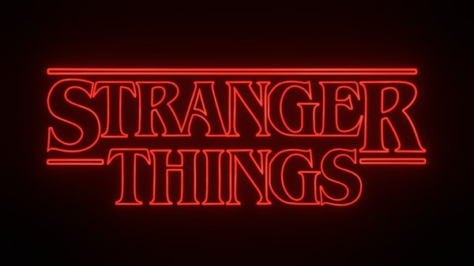

Stranger Things é uma série de que mistura ficção científica, terror, suspense e drama adolescente, criada, escrita e dirigida pelos irmãos Matt e Ross Duffer. A série estreou mundialmente em 15 de julho de 2016 e apresenta em seu elenco os nomes de Winona Ryder, David Harbour, Finn Wolfhard, Millie Bobby Brown, Gaten Matarazzo, Caleb McLaughlin, Noah Schnapp, Natalia Dyer, Charlie Heaton, Joe Keery, Cara Buono e Matthew Modine, enquanto Sadie Sink, Dacre Montgomery, Sean Astin, Paul Reiser, Maya Hawke, Priah Ferguson e Brett Gelman foram incluídos no elenco em temporadas posteriores.
